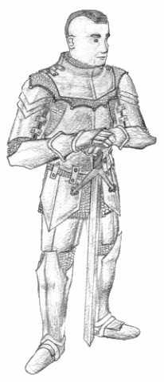

<!DOCTYPE HTML PUBLIC "-//W3C//DTD HTML 4.01//EN" "http://www.w3.org/TR/html4/strict.dtd">
<html>
<head>
<meta http-equiv="Content-Type" content="text/html; charset=iso-8859-1">
<meta http-equiv="Content-Script-Type" content="text:javascript">
<title>ECMA windows : Movable and Resizable</title>
<link rel="stylesheet" href="winelement.css" />
<script type="text/javascript" src="winobj.js"></script>
</head>
<body ondragdrop="return false;" onmouseup="mup(event);" onmousemove="mmove(event);">
<script>
//Array Index must match the second argument ('title') to the winobj constructor.//
ECMAwin[0]=new winobj("General Leo","0",100,50,256,256,'<big><b>WWII Leo : </b>By Iain Peregrine</big>');
ECMAwin[1]=new winobj("Name2","1",25,91,256,160,'<div style="text-align:justify;background-color:#aaffaa;">This is text, it is actually very important text. Though it does not relate the story of the begining, or explain the self relation of Mike to himself, it is still very important. This text is so important, that if it were gone then those things which depend on it could no longer use it. <b>This</b> was <i>bold</i> text. And this is not.</div>');
</script>
</body>
</html>